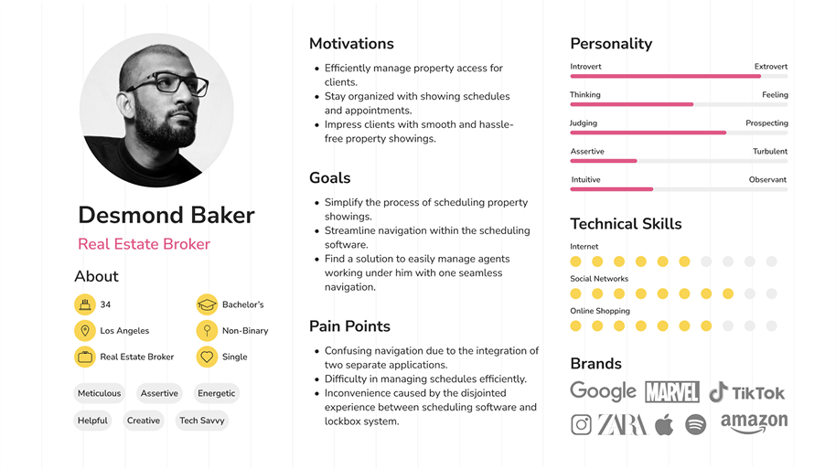
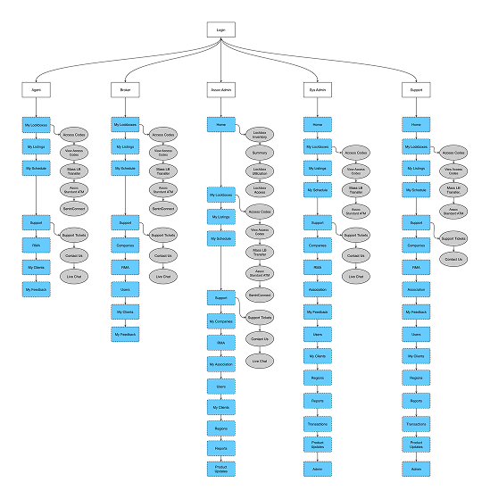
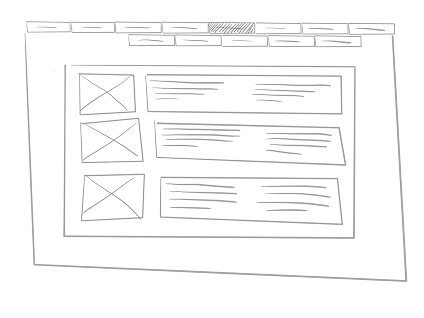
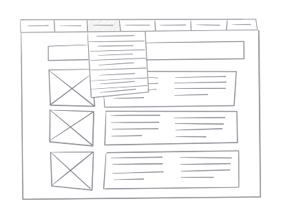
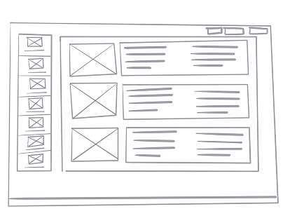

Unified Multi-App Navigation Framework

Project Overview
At the intersection of two critical real estate applications—a lockbox management system and an appointment scheduling platform—users were experiencing significant navigation friction. Our legacy system, developed nearly two decades ago, had prioritized expanding sales objectives over maintaining a cohesive user experience.
As we kicked off a major technical migration from PHP to Angular, I identified a strategic opportunity to completely reimagine our navigation structure. By fundamentally addressing how users move between these two distinct but related tools, we set out to build an intuitive, scalable system that worked for everyone.
100%
User Preference for Vertical Nav
4
Iterative Testing Cycles
The Problem Space
Our collaboration with customer support surfaced a persistent issue: users were constantly confused about which application they were actually using at any given time.
- Shared features & similar naming caused frequent frustration and task abandonment.
- Permission-based hidden links made the mental model of the app architecture completely unpredictable.
- Mounting Support Tickets: Application confusion was consistently highlighted as a top driver of negative customer feedback.
"Between the lockbox app and the scheduling tool, our users were getting lost. We needed a unified system that made navigating between them feel effortless rather than confusing."
Discovery & Strategy
Working closely with our customer advisory group and support teams, we initiated a comprehensive redesign process. The immediate goal was to simplify navigation overhead while retaining full functionality across both legacy platforms.

We began by exploring various groupings of sub-navigation menu items. Our initial testing phase focused on minimizing categories without sacrificing clarity. We put real-world scenarios in front of our users, like Desmond, to understand their mental models and daily workflows.

Visualizing the complex access and permission structure across varying user roles.
Design & Iteration
Throughout four iterative design cycles, we pitted two major navigation paradigms against each other: a traditional top-horizontal navigation bar versus a left-aligned vertical navigation system enhanced with clear iconography.


Initial explorations with a horizontal layout (above) led to overly complex dropdown interactions. We ultimately pivoted to testing a vertical structure (below) which vastly improved scalability.

Strict adherence to our newly established design system was crucial here to ensure visual consistency. The process wasn't without compromise—we occasionally had to deprecate deeply buried, unused features to clean up the architecture. This required extensive stakeholder communication and collaborative alignment to ensure business objectives were met while prioritizing the user.
User Testing & Interviews
To definitively choose between the horizontal and vertical models, we conducted a formalized qualitative research study with our customer advisory group. We ran moderated interview sessions where participants were asked to complete specific workflows using both interactive prototypes.
"The horizontal menu feels too cluttered whenever I open a dropdown. The vertical menu is much easier on the eyes because I can scan down naturally like reading a list, and it doesn't cover up my main workspace."
— Research Group Participant Insight
Key Preference Data
100%
Preferred Vertical Nav
Unanimous feedback
Less Clicks
Cognitive Load
Easier mental model
Affinity Mapping
After compiling the interview transcripts, we utilized affinity mapping to group common pain points. Users universally articulated that horizontal navigation breaks down at scale. When testing the horizontal prototype, users struggled to remember which nested dropdown contained the specific tool they needed. In contrast, the vertical redesign exposed more top-level hierarchy at a glance, confirming it was the correct long-term strategy for accommodating new multi-app links.
The Final Solution & Outcome
The shipped design delivered a clear, visually prominent, and minimalistic left-aligned vertical navigation menu. It features descriptive labels and recognizable icons that orient users instantly.
During validation, all of our test participants favored this vertical approach, citing its clarity, conciseness, and strict alignment with modern industry standards. The new navigation system successfully bridged the gap between the two disparate applications, simplifying the overall user experience.
Learnings & Impact
Implementing this unified design system not only created visual consistency but also established a highly scalable foundation for future expansions.
Key Reflection: This project proved that advocating for user-centric design during a purely technical refactor (PHP to Angular) can fundamentally upgrade the product experience. We didn't just update the underlying code; we established a new standard for interface design across our entire company ecosystem.